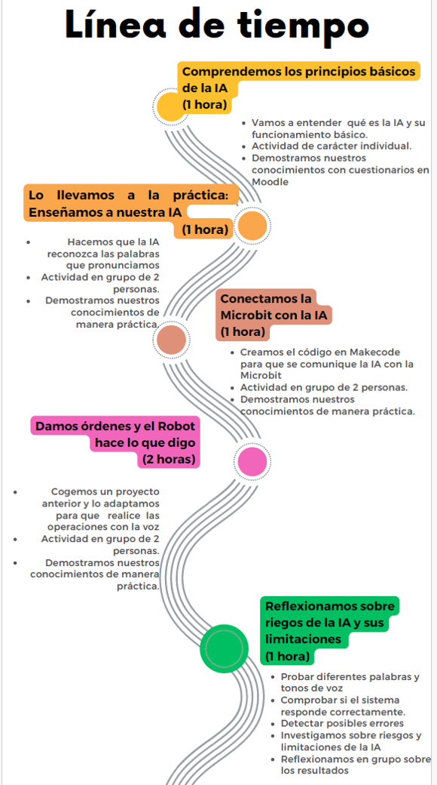

Situación de Aprendizaje: Dando órdenes por voz al robot: Inteligencia Artificial aplicada a la robótica

Esta Situación de Aprendizaje plantea reto realista y significativo: ¿Serías capaz de controlar un robot utilizando tu voz?
A lo largo de la actividad, se trabajará en equipos para diseñar, entrenar e implementar un sistema básico de reconocimiento de voz utilizando herramientas de Inteligencia Artificial, con el objetivo de controlar un robot previamente construido.
Descripción general:
Durante el proceso de aprendizaje deberás:
- Explorar cómo funcionan los sistemas de IA basados en datos (voz).
- Recopilar y clasificar datos de voz.
- Entrenar un modelo sencillo de reconocimiento de voz.
- Integrar el modelo con el robot, de forma que responda a órdenes reales.
- Probar, depurar y mejorar el sistema.
- Presentar el proyecto final, explicando el proceso seguido y las dificultades encontradas.
Producto
Todo ello dará lugar a un producto que estará constituido por:
- Prototipo funcional de robot controlado por voz
- Documento que incluye:
- Explicación del funcionamiento del sistema
- Datos utilizados para el entrenamiento
- Problemas encontrados y soluciones aplicadas
- Reflexión sobre el uso de la IA
- Justificación de la elección: La presente Situación de Aprendizaje se fundamenta en el análisis realizado en la rutina de pensamiento (Tarea 1.1), donde se ha reflexionado sobre una experiencia previa de aula relacionada con el uso de la Inteligencia Artificial aplicada al control de dispositivos por voz.
Duración y saberes trabajados
La situación de aprendizaje de “Dando órdenes por voz al robot: Inteligencia Artificial aplicada a la robótica” tiene una duración de 6 horas y se encuadra en la materia de Computación y Robótica del curso de 3º de la ESO, en la que se trabaja la competencia de “Recopilar, almacenar y procesar datos, identificando patrones y descubriendo conexiones para resolver problemas mediante la Inteligencia Artificial entendiendo cómo nos ayuda a mejorar nuestra comprensión del mundo” sobre la base de los saberes:
- CYR.3.H.1. Situación actual de la Inteligencia Artificial.
- CYR.3.H.2. Ética y responsabilidad social en el uso de IA: análisis y consecuencias del mal uso.
- CYR.3.H.3. Agentes inteligentes simples: funcionamiento.
- CYR.3.H.4. Aprendizaje automático: casos prácticos.
- CYR.3.H.5. Aprendizaje por refuerzo: aplicaciones.
Para ello, se llevará a cabo las siguientes actividades que se desarrollan bajo la herramienta Moodle:
- Cuestionario para valoración de conceptos sobre la historia, ética y agentes de IA. Para esta actividad, y después de haber hecho un poco de repaso, veremos cuanto sabemos sobre Inteligencia artificial. Conceptos que nos ayudaran a entender la parte práctica. La evaluación de esta parte será numérica.
- Tarea “Al robot le doy ordenes con la voz”, donde entrenarás con voz el modelo “Google Teachable Machine AI Model” que luego, una vez entrenado, vas a pasar las ordenes a una tarjeta Microbit que transmite la orden a otra por Bluetooth que produce los movimientos/operación planificados para las ordenes transmitidas. Al principio, te parecerá algo complicado. No obstante, a medidas que trabajes con él verás que el sistema reconoce tus palabras; palabras que luego se convertirán una acción sobre la Microbit.
La evaluación se realiza a través de rúbrica que valora el alcance de objetivos y la dificultad.